Modding:Referencia IDE
Esta página es una referencia rápida de cómo usar Visual Studio 2017 o MonoDevelop/Visual Studio para Mac al crear o editar un mod SMAPI. Ver Modding:Guía del Modder/Introducción para la guía principal.
Antes de comenzar
- Debes instalar Visual Studio Community (Windows), o Visual Studio for Mac (Mac).
- Revisión de Conceptos básicos de C# para principiantesse recomienda encarecidamente si eres nuevo en la programación C#.
- Estos son algunos términos que recordar:
Térm. Definición IDE El programa usado para editar, correr, y compilar tu código (abreviación de Integrated Development Environment en inglés, o Entorno de Desarrollo Integrado ). Las IDEs principales son Visual Studio en Windows, y MonoDevelop/Visual Studio para Linux o Mac. DLL El archivo con extensión .dll que contiene tu código (abreviación de Dynamic Link Library en inglés, o Biblioteca de enlace dinámico). Este es el archivo que SMAPI lee al cargar tu mod. Proyecto Colección de código fuente + configuración + recursos (como imágenes) que editas en la IDE. Cada proyecto es compilado en su propio DLL. Solución Un conjunto de proyectos con una configuración global. La solución no es compilada, pero tiene características convenientes (como dejar que los proyectos hagan referencia a otros).
Crea un proyecto de mod
Antes de escribir tu código, debes crear una solución y proyecto que lo contenga.
Windows (Visual Studio 2019/2022)
- Abre Visual Studio 2019/2022.
- Seleccionar Crear un proyecto en la pantalla de inicio.
_ES.png)
- Filtra por "C#" y "Librería", luego escoge Biblioteca de clase y haz click en Siguiente. Asegúrate de no escoger Biblioteca de clase (.NET Framework), porque esa no funcionará.
_ES.png/500px-Modding_-_IDE_reference_-_create_project_(Visual_Studio_2)_ES.png)
- En la pantalla de configurar proyecto:
- Ingresa un nombre de mod descriptivo. Como regla, el nombre debe estar escrito usando camelCase (cómo "ManzanasPorDoquier").
- Asegúrate de que "Colocar solución y proyecto en el mismo directorio" no esté activado.
- Haz click en "Crear" para crear el proyecto.
_ES.png)
- Luego, selecciona NET 6.0 y haz click en "Crear" para crear el proyecto. En VS 2022, esto estará en la página siguiente.

Windows/Mac/Linux (Rider 2024.x.x)
- Abre Rider.
- Haz click en New Solution desde la ventana de selección de proyectos. Rider podría abrir el proyecto previamente abierto. En ese caso, haga clic en File, y en New Solution.
- Haz click en Class Library en el panel izquierdo.

- Haga clic donde dicefrom <SDK version>.

- Seleccionar SDK 6.0 para que puedas crear un proyecto .NET 6.0.

- Seleccionar net6.0 en el menú desplegable a la derecha del Target framework.

- Haga clic en el botón Create.

Linux (MonoDevelop)
- Abre MonoDevelop.
- Haz click en File » New Solution desde la barra de menú:
.png)
- En la ventana 'New Project', elija .NET » Library y haga clic en Next:
.png)
- Ingresa un nombre de mod descriptivo para el proyecto. Como regla, el nombre debe estar escrito usando camelCase (cómo "ManzanasPorDoquier"):
.png)
- Asegúrese de que esté marcado "create a project directory within the solution directory" y haga clic en Create:
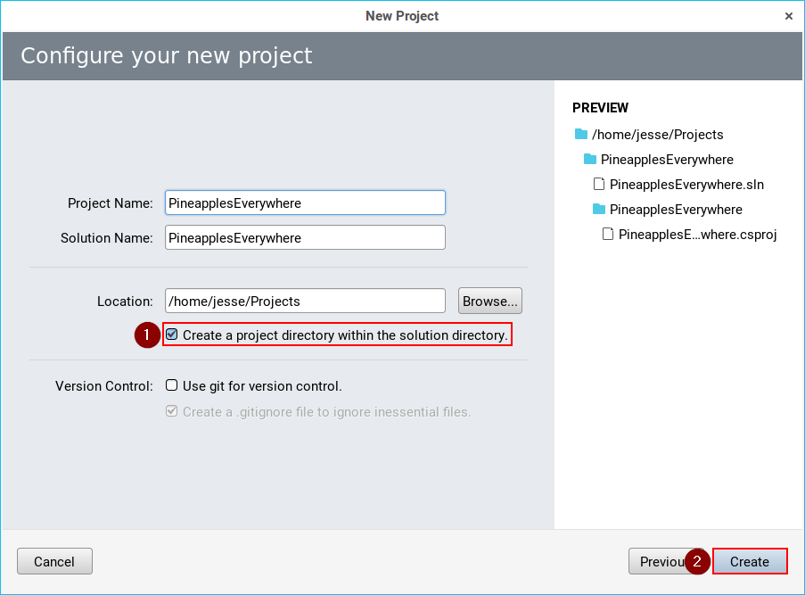
MacOS (Visual Studio 2019 para Mac)
- Instala la SDK de .NET 6.0 si no lo has hecho (compruebe aqui para su sistema).

- Abre Visual Studio para Mac.
- Haz click en Archivo » New Solution desde la barra de menú:
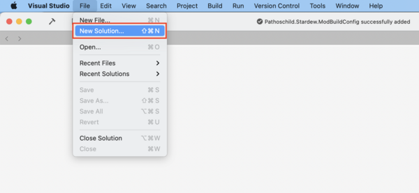 - Selecciona el tipo de Class Library correcto:
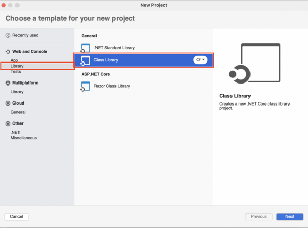 - Selecciona el target framework .NET 6.0.:

- Ingresa un nombre de mod descriptivo para el proyecto. Como regla, el nombre debe estar escrito usando camelCase (cómo "ManzanasPorDoquier"):

MacOS (Visual Studio para Mac)
- Abre Visual Studio para Mac.
- Haz click en File » New Solution desde la barra de menú:
.png)
- En la ventana 'New Project', escoge .NET » Library y haz click en Next:
.png)
- Ingresa un nombre de mod descriptivo. Como regla, el nombre debe estar escrito usando camelCase (cómo "ManzanasPorDoquier"):
.png)
- Asegúrate de que "create a project directory within the solution directory" esté seleccionado, y haz click en Create:
.png)
Selecciona la fuente de trabajo
La 'target framework' (fuente de trabajo) es la versión de .NET que tu código usa, lo que afecta la versión necesitada para usar tu mod. Se recomienda .NET 6.0, que es la versión que SMAPI usa en 1.6. Por favor revisa la versión de tu sistema operativo (Windows/Mac).
En Windows Visual Studio 2022
- Abre el panel de Solution Explorer. Si no es visible, haz click en View » Solution Explorer desde el menú:
.png)
- Desde el Solution Explorer, haz click derecho en el proyecto y selecciona Properties:
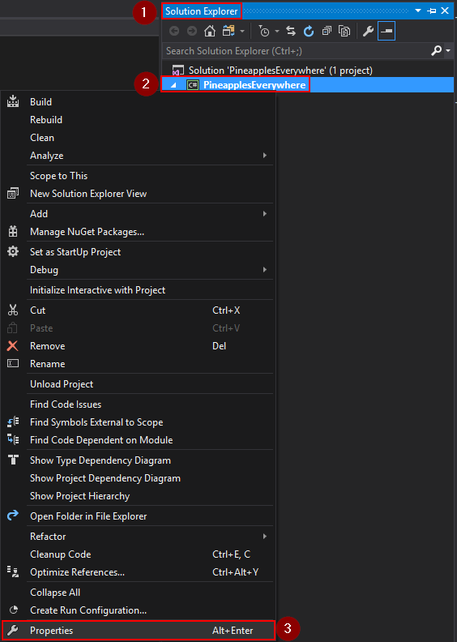 - En la pestaña Application, cambia el Target Framework a .NET 6.0:
.png)
- Puede aparecer un diálogo preguntándote para confirmar el cambio. Haz click en 'Yes' para confirmar:
.png)
En Visual Studio 2019 para Mac
Si siguió las instrucciones anteriores para configurar su proyecto, su framework ya debería estar configurado en .NET 6.0. However, Sin embargo, si eligió la class library incorrecta o simplemente desea verificar, puede seguir estos pasos para ver el archivo .csproj, que básicamente es equivalente a configurarlo manualmente. (Si está comprobando que funcionó, no reemplace el .csproj, solo verifique que se refiera a .NET 6.0.)
Desafortunadamente, no parece haber una manera de cambiar el target framework mediante la GUI. Sin embargo, es muy fácil seguir los pasos de la guía de migración 1.5.5:
- Abra el archivo .csproj para editarlo:
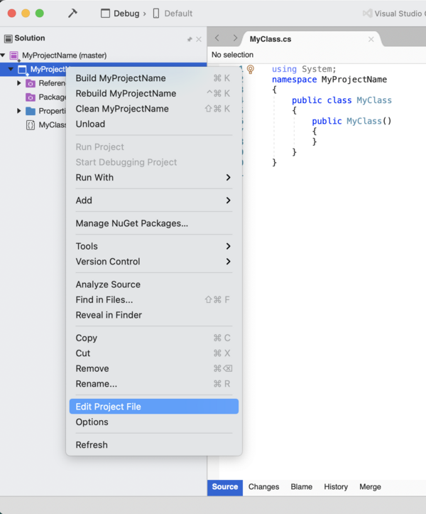 - Reemplaza tus archivos mod's .csproj con este (dónde
EJEMPLO_MOD_NOMBREes el nombre de su solution's):
<Project Sdk="Microsoft.NET.Sdk">
<PropertyGroup>
<AssemblyName>EJEMPLO_MOD_NOMBRE</AssemblyName>
<RootNamespace>EJEMPLO_MOD_NOMBRE</RootNamespace>
<Version>1.0.0</Version>
<TargetFramework>net5.0</TargetFramework>
</PropertyGroup>
<ItemGroup>
<PackageReference Include="Pathoschild.Stardew.ModBuildConfig" Version="4.0.0" />
</ItemGroup>
</Project>
- Si el mod utiliza Harmony, añadir
<EnableHarmony>true</EnableHarmony>al grupo de propiedades.
En MonoDevelop/Visual Studio para Mac
Esta sección está desactualizada para Stardew Valley 1.5.5. Parece que no puedes cambiar el .NET framework de esta manera con Visual Studio 2019 and Stardew Valley 1.5.5.
- Abra el panel Solution. Si no es visible, haga clic en el menú View » Pads » Solution:
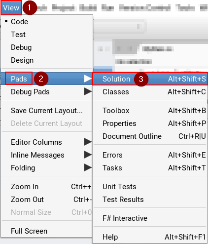 - Desde el panel Solution, haga clic derecho en el proyecto y elija Options:
.png)
- En el pestaña Build » General, cambie el Target Framework en el menú desplegable a Mono / .NET 6.0:
.png)
Agregar un archivo
En Visual Studio 2017
- Abra el panel Solution Explorer. Si no es visible, haga clic en el menú View » Solution Explorer:
- Desde el panel Solution Explorer, haga clic derecho en el proyecto y elija Add » New Item:
.png)
- En la ventana 'Add New Item', elija el tipo de archivo (generalmente Visual C# Item » Class):
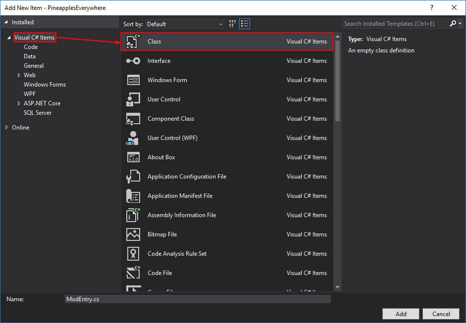 - Ingrese un nombre de archivo descriptivo Add:
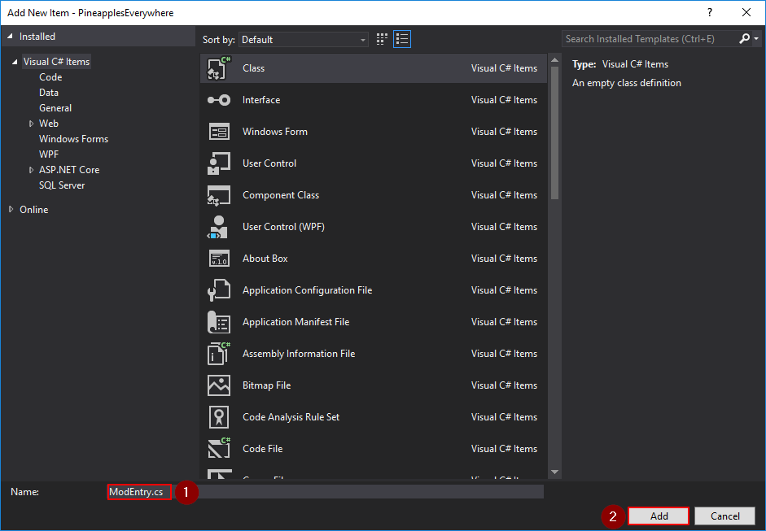
En MonoDevelop/Visual Studio para Mac
- Abra el panel Solution. Si no es visible, haga clic en el menú View » Pads » Solution:
- Abra el panel Solution, haga clic derecho en el proyecto para agregar y elija Add » New File:
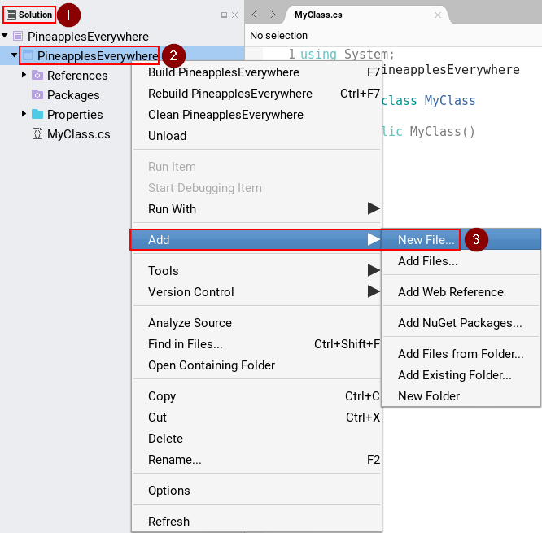 - En la ventana 'New File', elija el tipo de archivo (generalmente General » Empty Class):
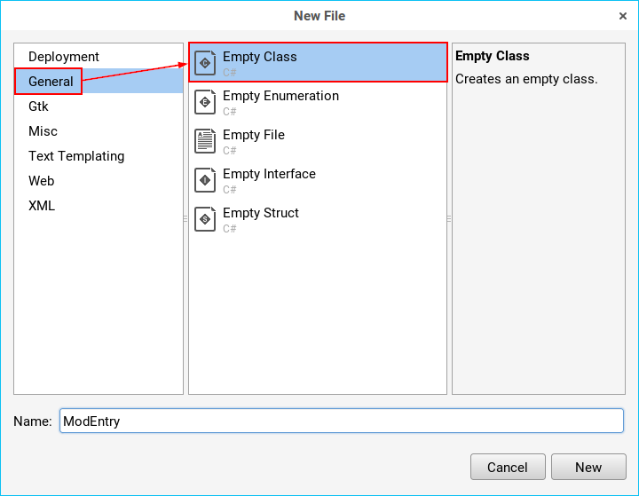 - Ingrese un nombre de archivo descriptivo y haga clic en New:
.png)
Eliminar un archivo
En Visual Studio 2017
- Abra el panel Solution Explorer. Si no es visible, haga clic en el menú View » Solution Explorer:
- En el panel Solution Explorer, haga clic derecho en el archivo para eliminar y elija Delete:
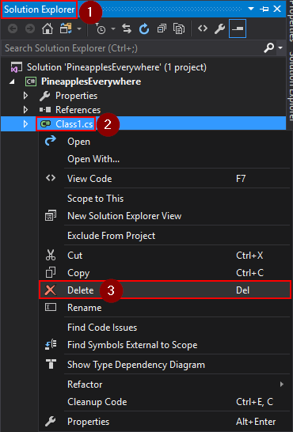
En MonoDevelop/Visual Studio para Mac
- Abra el panel Solution. Si no es visible, haga clic en el menú View » Pads » Solution:
- En el panel Solution, haga clic derecho en el archivo para eliminar y elija Remove:
.png)
Añadir un NuGet package
En Visual Studio Code
- A partir del 31 de agosto de, 2024, Visual Studio ahora está retirado para Mac. Puede estar usando Visual Studio Code para editar sus archivos de juego ahora. A partir de ahora, el Nuget Package Manager incorporado con el C# Dev Kit no funciona con SDK 6.0. Puede descargar otra extensión llamada "Nuget Package Manager GUI" de aliasadidev y la manera será similar al proceso a continuación para Visual Studio 2019. Si no desea descargar esto, puede usar la Terminal a continuación.
- Con su proyecto abierto, abra una nueva Terminal en Visual Studio Code.
- Escriba ```dotnet add StardewValleyMod25 package Pathoschild.Stardew.ModBuildConfig``` en la terminal y presione enter.
- Debería obtener un montón de mensajes de registro como en la imagen a continuación.
En Visual Studio 2019/2022
- Haga clic en el menú Tools » NuGet Package Manager » Manage NuGet Packages for Solution:
.png)
- Nota: si falta el nuget package manager esta desaparecido, puede agregarlo como un package source con los siguientes pasos: https://stackoverflow.com/questions/37293242/nuget-package-manager-no-packages-found-even-though-the-package-exists
- En la pestaña Browse, busque el package y haga clic en el resultado para mostrar algunas opciones::
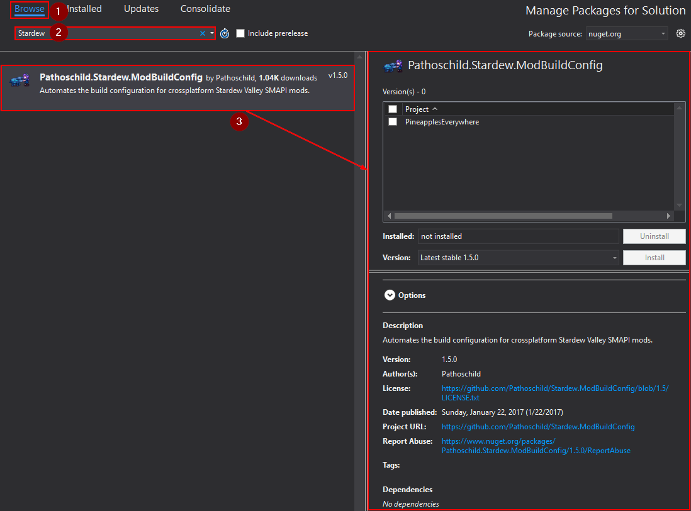 - En las opciones, marque la casilla junto a su proyecto y haga clic en Install:
.png)
- Si aparece un diálogo 'Review Changes', haga clic en OK:
.png)
En Visual Studio 2019 para Mac
- Haga clic en el menú Project » Manage NuGet Packages...:

- Busque el package, haga clic en el resultado y haga clic en Add Package:
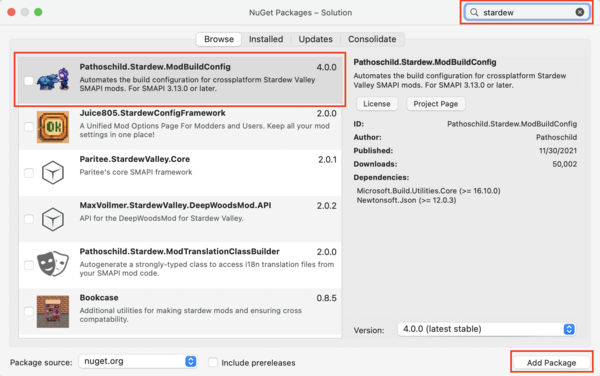 - Salga y vuelva a iniciar Visual Studio.
En MonoDevelop/Visual Studio para Mac
- Haga clic en el menú Project » Add NuGet Packages from the menu:
.png)
- Busque el package, haga clic en el resultado y haga clic en Add Package:
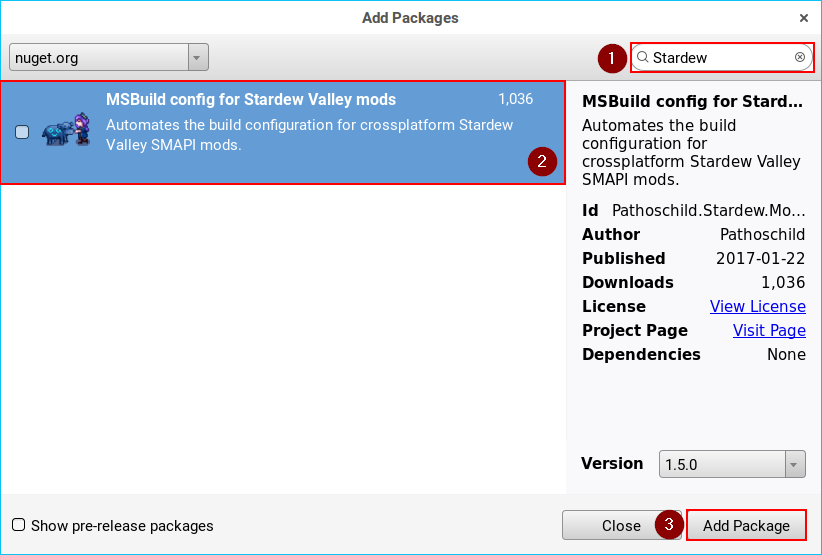
Editar archivo de proyecto (.csproj)
A veces es posible que desee editar el archivo del proyecto directamente (principalmente para configurar los pasos de compilación). El proyecto es un archivo .csproj, y se puede editar desde dentro del IDE.
En Visual Studio 2017
- Abra el panel Solution Explorer. Si no es visible, haga clic en el menú View » Solution Explorer:
- En el panel Solution Explorer, haga clic derecho en el proyecto y elija Unload:
.png)
- Haga clic derecho en el proyecto nuevamente y elija Edit <project name>.csproj:
.png)
- Realice los cambios en el editor que aparece y guarde.
- Cuando haya terminado, haga clic derecho en el proyecto nuevamente y elija Reload Project:
.png)
En MonoDevelop/Visual Studio para Mac
- Abra el panel Solution. Si no es visible, haga clic en el menú View » Pads » Solution:
- Desde el panel Solution, haga clic derecho en el proyecto y elija Tools » Edit File:
.png)
- Realice los cambios en el editor que aparece y guarde.
Encuentra archivos compilados
En Visual Studio 2017
- Abra el panel Solution Explorer. Si no es visible, haga clic en el menú View » Solution Explorer:
- Desde el panel Solution Explorer, haga clic derecho en el proyecto y elija Open Folder in File Explorer:
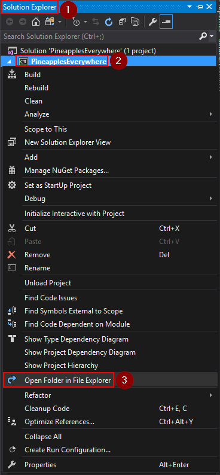 - Navegar a bin\Debug (or bin\Release si cambió la configuración de compilación de lanzamiento).
En MonoDevelop/Visual Studio para Mac
- Abra el panel Solution. Si no es visible, haga clic en el menú View » Pads » Solution:
- Desde el panel Solution, haga clic derecho en el proyecto y elija Open Containing Folder:
.png)
- Navegar a bin/Debug (o bin/Release si cambió la configuración de compilación de lanzamiento).
Añadir una referencia a otro DLL
En Visual Studio 2017
- Abra el panel Solution Explorer pane. Si no es visible, haga clic en el menú View » Solution Explorer:
- En el panel Solution Explorer , haga clic con el botón derecho en References y elija Add Reference...:
.png)
- En la ventana 'Reference Manager', elija Browseen el lado izquierdo, luego haga clic Browse.. en la parte inferior:
.png)
- Encuentre el DLL al que desea hacer referencia, selecciónela y haga clic Add:
.png)
- Desde la ventana 'Reference Manager', haga clic enOK:
.png)
En Rider
Al abrir un proyecto por primera vez, debe agregar una referencia a StardewModdingAPI.dll para que la finalización del código funcione.
- En el panel Explorador, seleccione la Solution view
- En el proyecto, haga clic derecho en Dependencies y elija Reference...
- En la ventana Add Reference, haga clic en Add From... en la parte inferior
- Encuentre el DLL al que desea hacer referencia, selecciónelo y haga clic OK